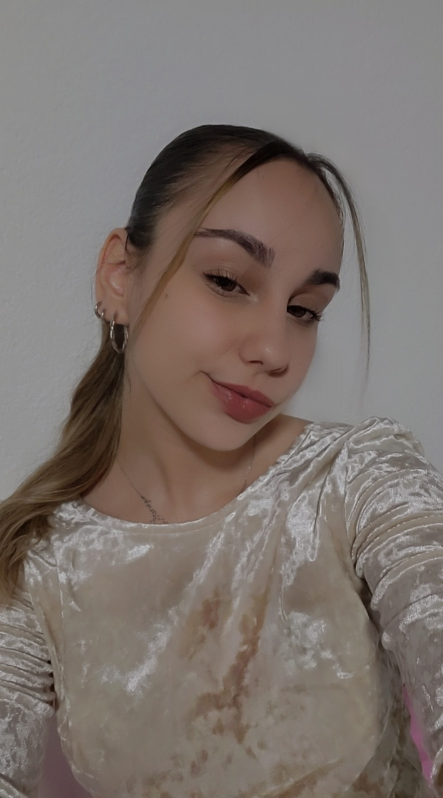

Бојана Тошевска
студент на ФИНКИ
насока: ПИТ
Родена сум на 19 јануари во Валандово и имам 20 години. Моето родно место и фамилијата имаат големо значење за мене и се основата на моите вредности и карактер. Во слободно време уживам да патувам, да истражувам нови места и култури, како и да поминувам квалитетно време со мојата фамилија. Завршив курс по германски јазик и го достигнав нивото Б2, што ми овозможува да комуницирам течно и да се изразувам самостојно. Исто така, повеќе од 5 години активно тренирав модерни танци. Танцот ме научи на дисциплина, тимска работа и самодоверба, и претставуваше важен дел од моето изразување и креативност.
